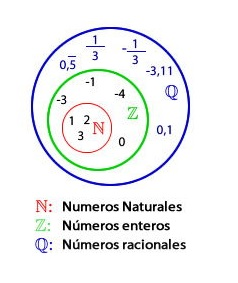

Fracciones
En matemáticas, una fracción, número fraccionario, (del vocablo latín frāctus, fractĭo -ōnis, roto, o quebrado)1 es la expresión de una cantidad dividida entre otra cantidad; es decir que representa un cociente no efectuado de números. Por razones históricas también se les llama fracción común, fracción mixta o fracción decimal. Las fracciones comunes se componen de: numerador, denominador y línea divisora entre ambos (barra horizontal u oblicua). En una fracción común {\displaystyle a/b}a/b el denominador "b" expresa la cantidad de partes iguales que representan la unidad, y el numerador "a" indica cuántas de ellas se toman.
El conjunto matemático que contiene a las fracciones de la forma a/b, donde a y b son números enteros y b≠0 es el conjunto de los números racionales, denotado como ℚ.
Toda fracción es una división y toda división es una fracción. Debido a eso una división se puede convertir en una fracción para ser simplificada.
Las fracciones pueden ser representadas como (a÷b) o (a/b) en una operación matemáticas.
De manera más general, se puede extender el concepto de fracción a un cociente cualquiera de expresiones matemáticas (no necesariamente números).
Videos
Breve y concisa explicación gráfica y numérica de simplificación de fracciones y como reducir a su mínima expresión una fracción, dentro del curso completo de fracciones.
¿Sabías Qué?
Las fracciones se conocen también con el nombre de "QUEBRADOS". El origen de las fracciones apunta a la necesidad de contar del hombre. ¿SABÍAS QUE? Los egipcios resolvían problemas de la vida diaria mediante operaciones con fracciones.
Aprende Jugando
Calcular las siguientes divisiones de fraciones:
- 2/3 : 4/3
- 5/6 : 15/12
- (1/2) / (3/4)
- 9/4 + 3/2 * 1/3
- 3 * 2/9 + 9/16 : 3/8
Dejanos tus Comentarios
Suma y Resta
Suma
La adición o suma es la operación matemática de composición que consiste en combinar o añadir dos números o más para obtener una cantidad final o total. La suma también ilustra el proceso de juntar dos colecciones de objetos con el fin de obtener una sola colección. Por otro lado, la acción repetitiva de sumar uno, es la forma más básica de contar.
En términos más formales, la suma es una operación aritmética definida sobre conjuntos de números (naturales, enteros, racionales, reales y complejos), y también sobre estructuras asociadas a ellos, como espacios vectoriales con vectores cuyas componentes sean estos números o funciones que tengan su imagen en ellos. También se suman matrices.
En el álgebra moderna se utiliza el nombre suma y su símbolo "+" para representar la operación formal de un anillo que dota al anillo de estructura de grupo abeliano, o la operación de un módulo que dota al módulo de estructura de grupo abeliano. También se utiliza a veces en teoría de grupos para representar la operación que dota a un conjunto de estructura de grupo. En estos casos se trata de una denominación puramente simbólica, sin que necesariamente coincida esta operación con la suma habitual en números, funciones, vectores, etc.
Resta
La resta o la sustracción es una operación de aritmética que se representa con el signo (–); representa la operación de eliminación de objetos de una colección. Por ejemplo, en la imagen de la derecha hay 5-2 manzanas—significando 5 manzanas con 2 quitadas, con lo cual hay un total de 3 manzanas. Por lo tanto, 5 – 2 = 3. Además de contar frutas, la sustracción también puede representar combinación de otras magnitudes físicas y abstractas usando diferentes tipos de objetos: números negativos, fracciones, números irracionales, vectores, decimales, funciones, matrices y más.
La sustracción sigue varios patrones importantes. Es anticonmutativa, lo que significa que el cambio del orden cambia el signo de la respuesta. No es asociativa, lo que significa que cuando se restan más de dos números, importa el orden en el que se realiza la resta. Restar 0 no cambia un número. La sustracción también obedece a reglas predecibles relativas a las operaciones relacionadas, tales como la adición y la multiplicación. Todas estas reglas pueden probarse a partir de la sustracción de números enteros y generalizarlas mediante los números reales y más allá. Las operaciones binarias generales que siguen estos patrones se estudian en el álgebra abstracta.
Realizar sustracciones es una de las tareas numéricas más simples. La sustracción de números muy pequeños es accesible para los niños pequeños. En la educación primaria, a los estudiantes se les enseña a restar números en el sistema decimal, comenzando con un solo dígito y progresivamente abordando problemas más difíciles. Las ayudas mecánicas van desde el antiguo ábaco a a computadora moderna.
Videos
Breve explicación de cómo sumar o restar números enteros utilizando el método de deber y tener, dentro del curso de números enteros.
¿Sabías Qué?
Un centímetro es la centésima parte (1/100) de un metro. En un metro hay 100 centímetros. Pero un centímetro cuadrado no es la centésima parte de un metro cuadrado. En un metro cuadrado, ¿sabes cuántos centímetros cuadrados caben? Si lo calculas sabrás que un centímetro cuadrado es la diezmilésima parte de un metro cuadrado.
Aprende Jugando
Calcular las siguientes sumas y restas de fracciones con denominador común y simplificar, si es posible, el resultado.
- 66/4 - 33/4 - 1/4
- -3/10 - 2/10 + 4/10
- -12/11 + 1/11 - 2/11
- -7/8 - 5-/8 - 4/8
Dejanos tus Comentarios
División
En la matemática, la división es una operación parcialmente definida en el conjunto de los números naturales y los números enteros; en cambio, en el caso de los números racionales, reales y complejos es siempre posible efectuar la división, exigiendo que el divisor sea distinto de cero, sea cual fuera la naturaleza de los números por dividir. En el caso de que sea posible efectuar la división, esta consiste en indagar cuántas veces un número (divisor) está "contenido" en otro número (dividendo). El resultado de una división recibe el nombre de cociente. De manera general puede decirse que la división es la operación inversa de la multiplicación, siempre y cuando se realice en un campo.1
Debe distinguirse la división «exacta» (sujeto principal de este artículo) de la «división con resto» o residuo (la división euclídea). A diferencia de la suma, la resta o la multiplicación, la división entre números enteros no está siempre definida; en efecto: 4 dividido 2 es igual a 2 (un número entero), pero 2 entre 4 es igual a ½ (un medio), que ya no es un número entero. La definición formal de «división» , «divisibilidad» y «conmensurabilidad», dependerá luego del conjunto de definición.
Como cualquier operación, en el resultado de una división tiene que ser único, por eso existe una definición para cociente y resto.
Videos
Breve explicación con ejemplos de la forma de dividir números racionales, más exactamente racionales negativos, dentro de los cursos de fracciones y números racionales.
¿Sabías Qué?
La fracción sirve para expresar una división, es decir, una repartición de un entero. El numerador indica cuántas partes tomare de ese entero y el denominador indica en cuantas partes se dividió el entero.
Aprende Jugando
Calcular las siguientes divisiones de fraciones:
- (3/4 : 5/6) / (3/4 : 9/6)
- 6/4 : X/3 = 18/8
- 8/9 : 2/X = 4
- 1/5 : 25/75
- 4/18 : 12/24
Dejanos tus Comentarios
Multiplicación
La multiplicación es una operación binaria que se establece en un conjunto numérico.2 Tal el caso de números naturales, consiste en sumar un número tantas veces como indica otro número. Así, 4×3 (léase «cuatro multiplicado por tres» o, simplemente, «cuatro por tres») es igual a sumar tres veces el valor 4 por sí mismo (4+4+4). Es una operación diferente de la adición, pero equivalente. No es igual a una suma reiterada; solo son equivalentes porque permiten alcanzar el mismo resultado. La multiplicación está asociada al concepto de área geométrica.
La potenciación es un caso particular de la multiplicación donde el exponente indica las veces que debe multiplicarse un número por sí mismo.
El resultado de la multiplicación de varios números se llama producto. Los números que se multiplican se llaman factores o coeficientes, e individualmente: multiplicando (número a sumar o número que se está multiplicando) y multiplicador (veces que se suma el multiplicando). Aunque esta diferenciación en algunos contextos puede ser superflua cuando en el conjunto donde esté definido el producto se tiene la propiedad conmutativa de la multiplicación (por ejemplo, en los conjuntos numéricos), pero puede ser útil cuando se ocupa para referirse al multiplicador de una expresión algebraica (ej: en {\displaystyle a^{2}b+a^{2}b+a^{2}b}{\displaystyle a^{2}b+a^{2}b+a^{2}b} ó {\displaystyle 3a^{2}b}{\displaystyle 3a^{2}b}, 3 es el multiplicador o coeficiente, mientras que el monomio {\displaystyle a^{2}b}{\displaystyle a^{2}b} es el multiplicando).
En álgebra moderna se suele usar la denominación «cociente» o «multiplicación» con su notación habitual «·» para designar la operación externa en un módulo, para designar también la segunda operación que se define en un anillo (aquella para la que no está definido el elemento inverso del 0), o para designar la operación que dota a un conjunto de estructura de grupo. La operación inversa de la multiplicación es la división.
Videos
Breve explicación de cómo multiplicar utilizando la ley de los signos de la división, dentro del curso de Números fraccionados.
¿Sabías Qué?
De la superficie de nuestro planeta, la Tierra, las tres cuartas partes (3/4) están cubiertas por el agua de los mares y los océanos. Sólo una cuarta parte(1/4) es "tierra".
Aprende Jugando
Calcular las siguientes multiplicaciones de fraciones:
- 2/3 * X/4 = 10/12
- 5/6 * 2/X = 10/21
- 6 * 2/15
- 5/32 * 7
- 3 * 2/18 + 9/6 * 3/4
Dejanos tus Comentarios
Transformación de Números Racionales
Los números racionales son todos los números que pueden representarse como el cociente de dos números enteros o, más exactamente, un entero y un natural positivo;1 es decir, una fracción común {\displaystyle a/b}a/b con numerador {\displaystyle a}a y denominador {\displaystyle b}b distinto de cero. El término «racional» alude a una fracción o parte de un todo. El conjunto de los números racionales se denota por Q (o bien {\displaystyle \mathbb {Q} }\mathbb{Q}, en negrita de pizarra) que deriva de «cociente» (Quotient en varios idiomas europeos). Este conjunto de números incluye a los números enteros ({\displaystyle \mathbb {Z} }\mathbb{Z}) y a los números fraccionarios y es un subconjunto de los números reales ({\displaystyle \mathbb {R} }\mathbb{R}).
La escritura decimal de un número racional es, o bien un número decimal finito, o bien semiperiódico. Esto es cierto no solo para números escritos en base 10 (sistema decimal); también lo es en base binaria, hexadecimal o cualquier otra base entera. Recíprocamente, todo número que admite una expansión finita o periódica (en cualquier base entera) es un número racional.
Un número real que no es racional se llama número irracional; la expresión decimal de los números irracionales, a diferencia de los racionales, es infinita aperiódica.
En sentido estricto, número racional es el conjunto de todas las fracciones equivalentes a una dada; de todas ellas, se toma como representante canónico de dicho número racional a la fracción irreducible. Las fracciones equivalentes entre sí –número racional– son una clase de equivalencia, resultado de la aplicación de una relación de equivalencia sobre {\displaystyle \mathbb {Z} }\mathbb{Z}.Representación del conjunto de números racionales:

Videos
Una pequeña introducción a los números racionales más exactamente cuando tienen signos negativos recordando que los números racionales positivos también se llaman "fracciones". Dentro de los cursos de fracciones y números racionales.
¿Sabías Qué?
En el conjunto de los racionales están contenidos los enteros, fracciones y decimales positivos y negativos, excepto los decimales infinitos no periódicos, estos pertenecen al conjunto de números irracionales.
Aprende Jugando
Efectúe cada operación y exprese su resultado en la forma más simple
2/3 * 3/4 + 5/6
(5/6 - 3/4) / (7/12 + 1/3)
(3/8 + 2/3) * 6/10 + -7/20
(2 - 1/2) / (3 + 1/3)
En las elecciones para presidente del colegio, 3/11 de los votos fueron para el candidato A, 3/10 para el candidato B, 5/14 para el candidato C y el resto para el candidato D. El total de votos fue de 15.400 estudiantes. Calcular:
- El número de votos obtenidos por cada candidato.
- El número de abstenciones sabiendo que el número total de votantes representa 7/8 del número total de estudiantes del colegio.